This package contains connectors and partial models for 1-dim. rotational mechanical components. The components of this package can only be used as basic building elements for models.
Extends from Modelica.Icons.Library (Icon for library).
| Name | Description |
|---|---|
| Flange_a | 1-dim. rotational flange of a shaft (filled square icon) |
| 1-dim. rotational flange of a shaft (non-filled square icon) | |
| Support | Support/housing of a 1-dim. rotational shaft |
| Adapter model to utilize conditional support connector | |
| Partial model for a component with two rotational 1-dim. shaft flanges | |
| Partial model for a component with one rotational 1-dim. shaft flange and a support used for graphical modeling, i.e., the model is build up by drag-and-drop from elementary components | |
| Partial model for a component with two rotational 1-dim. shaft flanges and a support used for graphical modeling, i.e., the model is build up by drag-and-drop from elementary components | |
| Partial model for the compliant connection of two rotational 1-dim. shaft flanges | |
| Partial model for the compliant connection of two rotational 1-dim. shaft flanges where the relative angle and speed are used as preferred states | |
| 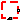 PartialElementaryOneFlangeAndSupport | Obsolete partial model. Use PartialElementaryOneFlangeAndSupport2. |
| PartialElementaryOneFlangeAndSupport2 | Partial model for a component with one rotational 1-dim. shaft flange and a support used for textual modeling, i.e., for elementary models |
| 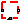 PartialElementaryTwoFlangesAndSupport | Obsolete partial model. Use PartialElementaryTwoFlangesAndSupport2. |
| Partial model for a component with two rotational 1-dim. shaft flanges and a support used for textual modeling, i.e., for elementary models | |
| PartialElementaryRotationalToTranslational | Partial model to transform rotational into translational motion |
| 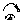 PartialTorque | Partial model of a torque acting at the flange (accelerates the flange) |
| PartialAbsoluteSensor | Partial model to measure a single absolute flange variable |
| PartialRelativeSensor | Partial model to measure a single relative variable between two flanges |
| PartialFriction | Partial model of Coulomb friction elements |
 Modelica.Mechanics.Rotational.Interfaces.Flange_a
Modelica.Mechanics.Rotational.Interfaces.Flange_a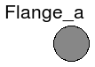
This is a connector for 1-dim. rotational mechanical systems and models the mechanical flange of a shaft. The following variables are defined in this connector:
| phi | Absolute rotation angle of theshaft flange in [rad] |
| tau | Cut-torque in the shaft flange in [Nm] |
There is a second connector for flanges: Flange_b. The connectors Flange_a and Flange_b are completely identical. There is only a difference in the icons, in order to easier identify a flange variable in a diagram. For a discussion on the actual direction of the cut-torque tau and of the rotation angle, see section Sign Conventions in the user's guide of Rotational.
If needed, the absolute angular velocity w and the absolute angular acceleration a of the flange can be determined by differentiation of the flange angle phi:
w = der(phi); a = der(w)
| Type | Name | Description |
|---|---|---|
| Angle | phi | Absolute rotation angle of flange [rad] |
| flow Torque | tau | Cut torque in the flange [N.m] |
connector Flange_a "1-dim. rotational flange of a shaft (filled square icon)" SI.Angle phi "Absolute rotation angle of flange"; flow SI.Torque tau "Cut torque in the flange"; end Flange_a;
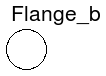
This is a connector for 1-dim. rotational mechanical systems and models the mechanical flange of a shaft. The following variables are defined in this connector:
| phi | Absolute rotation angle of the shaft flange in [rad] |
| tau | Cut-torque in the shaft flange in [Nm] |
There is a second connector for flanges: Flange_a. The connectors Flange_a and Flange_b are completely identical. There is only a difference in the icons, in order to easier identify a flange variable in a diagram. For a discussion on the actual direction of the cut-torque tau and of the rotation angle, see section Sign Conventions in the user's guide of Rotational.
If needed, the absolute angular velocity w and the absolute angular acceleration a of the flange can be determined by differentiation of the flange angle phi:
w = der(phi); a = der(w)
| Type | Name | Description |
|---|---|---|
| Angle | phi | Absolute rotation angle of flange [rad] |
| flow Torque | tau | Cut torque in the flange [N.m] |
connector Flange_b "1-dim. rotational flange of a shaft (non-filled square icon)" SI.Angle phi "Absolute rotation angle of flange"; flow SI.Torque tau "Cut torque in the flange"; end Flange_b;
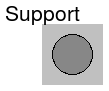
This is a connector for 1-dim. rotational mechanical systems and models the support or housing of a shaft. The following variables are defined in this connector:
| phi | Absolute rotation angle of the support/housing in [rad] |
| tau | Reaction torque in the support/housing in [Nm] |
The support connector is usually defined as conditional connector. It is most convenient to utilize it
| Type | Name | Description |
|---|---|---|
| Angle | phi | Absolute rotation angle of the support/housing [rad] |
| flow Torque | tau | Reaction torque in the support/housing [N.m] |
connector Support "Support/housing of a 1-dim. rotational shaft" SI.Angle phi "Absolute rotation angle of the support/housing"; flow SI.Torque tau "Reaction torque in the support/housing"; end Support;

This is an adapter model to utilize a conditional support connector in an elementary component, i.e., where the component equations are defined textually:
Variable tau is defined as input and must be provided when using this component as a modifier (computed via a torque balance in the model where InternalSupport is used). Usually, model InternalSupport is utilized via the partial models:
PartialElementaryOneFlangeAndSupport,
PartialElementaryTwoFlangesAndSupport,
PartialElementaryRotationalToTranslational.
Note, the support angle can always be accessed as internalSupport.phi, and the support torque can always be accessed as internalSupport.tau.
| Type | Name | Description |
|---|---|---|
| Flange_a | flange | Internal support flange (must be connected to the conditional support connector for useSupport=true and to conditional fixed model for useSupport=false) |
model InternalSupport
"Adapter model to utilize conditional support connector"
input Modelica.SIunits.Torque tau
"External support torque (must be computed via torque balance in model where InternalSupport is used; = flange.tau)";
Modelica.SIunits.Angle phi "External support angle (= flange.phi)";
Flange_a flange
"Internal support flange (must be connected to the conditional support connector for useSupport=true and to conditional fixed model for useSupport=false)";
equation
flange.tau = tau;
flange.phi = phi;
end InternalSupport;
 Modelica.Mechanics.Rotational.Interfaces.PartialTwoFlanges
Modelica.Mechanics.Rotational.Interfaces.PartialTwoFlanges
This is a 1-dim. rotational component with two flanges. It is used e.g. to build up parts of a drive train consisting of several components.
| Type | Name | Description |
|---|---|---|
| Flange_a | flange_a | Flange of left shaft |
| Flange_b | flange_b | Flange of right shaft |
partial model PartialTwoFlanges "Partial model for a component with two rotational 1-dim. shaft flanges" Flange_a flange_a "Flange of left shaft"; Flange_b flange_b "Flange of right shaft"; end PartialTwoFlanges;
 Modelica.Mechanics.Rotational.Interfaces.PartialOneFlangeAndSupport
Modelica.Mechanics.Rotational.Interfaces.PartialOneFlangeAndSupport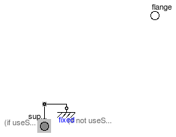
This is a 1-dim. rotational component with one flange and a support/housing. It is used e.g. to build up parts of a drive train graphically consisting of several components.
If useSupport=true, the support connector is conditionally enabled
and needs to be connected.
If useSupport=false, the support connector is conditionally disabled
and instead the component is internally fixed to ground.
| Type | Name | Default | Description |
|---|---|---|---|
| Boolean | useSupport | false | = true, if support flange enabled, otherwise implicitly grounded |
| Type | Name | Description |
|---|---|---|
| Flange_b | flange | Flange of shaft |
| Support | support | Support/housing of component |
partial model PartialOneFlangeAndSupport
"Partial model for a component with one rotational 1-dim. shaft flange and a support used for graphical modeling, i.e., the model is build up by drag-and-drop from elementary components"
parameter Boolean useSupport=false
"= true, if support flange enabled, otherwise implicitly grounded";
Flange_b flange "Flange of shaft";
Support support if useSupport "Support/housing of component";
protected
Support internalSupport
"Internal support/housing of component (either connected to support, if useSupport=true, or connected to fixed, if useSupport=false)";
Components.Fixed fixed if not useSupport
"Fixed support/housing, if not useSupport";
equation
connect(support, internalSupport);
connect(internalSupport, fixed.flange);
end PartialOneFlangeAndSupport;
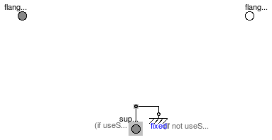
This is a 1-dim. rotational component with two flanges and a support/housing. It is used e.g. to build up parts of a drive train graphically consisting of several components.
If useSupport=true, the support connector is conditionally enabled
and needs to be connected.
If useSupport=false, the support connector is conditionally disabled
and instead the component is internally fixed to ground.
| Type | Name | Default | Description |
|---|---|---|---|
| Boolean | useSupport | false | = true, if support flange enabled, otherwise implicitly grounded |
| Type | Name | Description |
|---|---|---|
| Flange_a | flange_a | Flange of left shaft |
| Flange_b | flange_b | Flange of right shaft |
| Support | support | Support/housing of component |
partial model PartialTwoFlangesAndSupport
"Partial model for a component with two rotational 1-dim. shaft flanges and a support used for graphical modeling, i.e., the model is build up by drag-and-drop from elementary components"
parameter Boolean useSupport=false
"= true, if support flange enabled, otherwise implicitly grounded";
Flange_a flange_a "Flange of left shaft";
Flange_b flange_b "Flange of right shaft";
Support support if useSupport "Support/housing of component";
protected
Support internalSupport
"Internal support/housing of component (either connected to support, if useSupport=true, or connected to fixed, if useSupport=false)";
Components.Fixed fixed if not useSupport
"Fixed support/housing, if not useSupport";
equation
connect(support, internalSupport);
connect(internalSupport, fixed.flange);
end PartialTwoFlangesAndSupport;
 Modelica.Mechanics.Rotational.Interfaces.PartialCompliant
Modelica.Mechanics.Rotational.Interfaces.PartialCompliant

This is a 1-dim. rotational component with a compliant connection of two rotational 1-dim. flanges where inertial effects between the two flanges are neglected. The basic assumption is that the cut-torques of the two flanges sum-up to zero, i.e., they have the same absolute value but opposite sign: flange_a.tau + flange_b.tau = 0. This base class is used to built up force elements such as springs, dampers, friction.
| Type | Name | Description |
|---|---|---|
| Flange_a | flange_a | Left flange of compliant 1-dim. rotational component |
| Flange_b | flange_b | Right flange of compliant 1-dim. rotational component |
partial model PartialCompliant
"Partial model for the compliant connection of two rotational 1-dim. shaft flanges"
Modelica.SIunits.Angle phi_rel(start=0)
"Relative rotation angle (= flange_b.phi - flange_a.phi)";
Modelica.SIunits.Torque tau "Torque between flanges (= flange_b.tau)";
Flange_a flange_a "Left flange of compliant 1-dim. rotational component";
Flange_b flange_b "Right flange of compliant 1-dim. rotational component";
equation
phi_rel = flange_b.phi - flange_a.phi;
flange_b.tau = tau;
flange_a.tau = -tau;
end PartialCompliant;
Modelica.Mechanics.Rotational.Interfaces.PartialCompliantWithRelativeStates
This is a 1-dim. rotational component with a compliant connection of two rotational 1-dim. flanges where inertial effects between the two flanges are neglected. The basic assumption is that the cut-torques of the two flanges sum-up to zero, i.e., they have the same absolute value but opposite sign: flange_a.tau + flange_b.tau = 0. This base class is used to built up force elements such as springs, dampers, friction.
The relative angle and the relative speed are defined as preferred states. The reason is that for some drive trains, such as drive trains in vehicles, the absolute angle is quickly increasing during operation. Numerically, it is better to use relative angles between drive train components because they remain in a limited size. For this reason, StateSelect.prefer is set for the relative angle of this component.
In order to improve the numerics, a nominal value for the relative angle can be provided via parameter phi_nominal in the Advanced menu. The default ist 1e-4 rad since relative angles are usually in this order and the step size control of an integrator would be practically switched off, if a default of 1 rad would be used. This nominal value might also be computed from other values, such as "phi_nominal = tau_nominal / c" for a rotational spring, if tau_nominal and c are more meaningful for the user.
| Type | Name | Default | Description |
|---|---|---|---|
| Advanced | |||
| Angle | phi_nominal | 1e-4 | Nominal value of phi_rel (used for scaling) [rad] |
| StateSelect | stateSelect | StateSelect.prefer | Priority to use phi_rel and w_rel as states |
| Type | Name | Description |
|---|---|---|
| Flange_a | flange_a | Left flange of compliant 1-dim. rotational component |
| Flange_b | flange_b | Right flange of compliant 1-dim. rotational component |
partial model PartialCompliantWithRelativeStates
"Partial model for the compliant connection of two rotational 1-dim. shaft flanges where the relative angle and speed are used as preferred states"
Modelica.SIunits.Angle phi_rel(start=0, stateSelect=stateSelect, nominal=phi_nominal)
"Relative rotation angle (= flange_b.phi - flange_a.phi)";
Modelica.SIunits.AngularVelocity w_rel(start=0, stateSelect=stateSelect)
"Relative angular velocity (= der(phi_rel))";
Modelica.SIunits.AngularAcceleration a_rel(start=0)
"Relative angular acceleration (= der(w_rel))";
Modelica.SIunits.Torque tau "Torque between flanges (= flange_b.tau)";
Flange_a flange_a "Left flange of compliant 1-dim. rotational component";
Flange_b flange_b "Right flange of compliant 1-dim. rotational component";
parameter SI.Angle phi_nominal(displayUnit="rad")=1e-4
"Nominal value of phi_rel (used for scaling)";
parameter StateSelect stateSelect=StateSelect.prefer
"Priority to use phi_rel and w_rel as states";
equation
phi_rel = flange_b.phi - flange_a.phi;
w_rel = der(phi_rel);
a_rel = der(w_rel);
flange_b.tau = tau;
flange_a.tau = -tau;
end PartialCompliantWithRelativeStates;
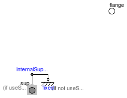
This is a 1-dim. rotational component with one flange and a support/housing. It is used to build up elementary components of a drive train with equations in the text layer.
If useSupport=true, the support connector is conditionally enabled
and needs to be connected.
If useSupport=false, the support connector is conditionally disabled
and instead the component is internally fixed to ground.
Extends from Modelica.Icons.ObsoleteModel (Icon for an obsolete model (use only for this case)).
| Type | Name | Default | Description |
|---|---|---|---|
| Boolean | useSupport | false | = true, if support flange enabled, otherwise implicitly grounded |
| Type | Name | Description |
|---|---|---|
| Flange_b | flange | Flange of shaft |
| Support | support | Support/housing of component |
partial model PartialElementaryOneFlangeAndSupport
"Obsolete partial model. Use PartialElementaryOneFlangeAndSupport2."
extends Modelica.Icons.ObsoleteModel;
parameter Boolean useSupport=false
"= true, if support flange enabled, otherwise implicitly grounded";
Flange_b flange "Flange of shaft";
Support support if useSupport "Support/housing of component";
protected
Rotational.Interfaces.InternalSupport internalSupport(tau = -flange.tau)
"Internal support/housing of component as a model with connector flange (flange is either connected to support, if useSupport=true, or connected to fixed, if useSupport=false)";
Rotational.Components.Fixed fixed if not useSupport
"Fixed support/housing, if not useSupport";
equation
connect(internalSupport.flange, support);
connect(internalSupport.flange, fixed.flange);
end PartialElementaryOneFlangeAndSupport;
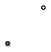
This is a 1-dim. rotational component with one flange and a support/housing. It is used to build up elementary components of a drive train with equations in the text layer.
If useSupport=true, the support connector is conditionally enabled
and needs to be connected.
If useSupport=false, the support connector is conditionally disabled
and instead the component is internally fixed to ground.
| Type | Name | Default | Description |
|---|---|---|---|
| Boolean | useSupport | false | = true, if support flange enabled, otherwise implicitly grounded |
| Type | Name | Description |
|---|---|---|
| Flange_b | flange | Flange of shaft |
| Support | support | Support/housing of component |
partial model PartialElementaryOneFlangeAndSupport2
"Partial model for a component with one rotational 1-dim. shaft flange and a support used for textual modeling, i.e., for elementary models"
parameter Boolean useSupport=false
"= true, if support flange enabled, otherwise implicitly grounded";
Flange_b flange "Flange of shaft";
Support support(phi = phi_support, tau = -flange.tau) if useSupport
"Support/housing of component";
protected
Modelica.SIunits.Angle phi_support "Absolute angle of support flange";
equation
if not useSupport then
phi_support = 0;
end if;
end PartialElementaryOneFlangeAndSupport2;
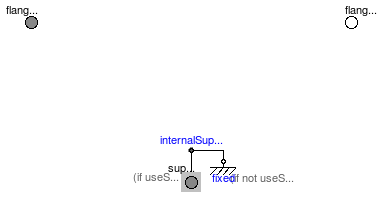
This is a 1-dim. rotational component with two flanges and a support/housing. It is used to build up elementary components of a drive train with equations in the text layer.
If useSupport=true, the support connector is conditionally enabled
and needs to be connected.
If useSupport=false, the support connector is conditionally disabled
and instead the component is internally fixed to ground.
Extends from Modelica.Icons.ObsoleteModel (Icon for an obsolete model (use only for this case)).
| Type | Name | Default | Description |
|---|---|---|---|
| Boolean | useSupport | false | = true, if support flange enabled, otherwise implicitly grounded |
| Type | Name | Description |
|---|---|---|
| Flange_a | flange_a | Flange of left shaft |
| Flange_b | flange_b | Flange of right shaft |
| Support | support | Support/housing of component |
partial model PartialElementaryTwoFlangesAndSupport
"Obsolete partial model. Use PartialElementaryTwoFlangesAndSupport2."
extends Modelica.Icons.ObsoleteModel;
parameter Boolean useSupport=false
"= true, if support flange enabled, otherwise implicitly grounded";
Flange_a flange_a "Flange of left shaft";
Flange_b flange_b "Flange of right shaft";
Support support if useSupport "Support/housing of component";
protected
Rotational.Interfaces.InternalSupport internalSupport(tau = -flange_a.tau - flange_b.tau)
"Internal support/housing of component as a model with connector flange (flange is either connected to support, if useSupport=true, or connected to fixed, if useSupport=false)";
Rotational.Components.Fixed fixed if not useSupport
"Fixed support/housing, if not useSupport";
equation
connect(internalSupport.flange, support);
connect(internalSupport.flange, fixed.flange);
end PartialElementaryTwoFlangesAndSupport;
 Modelica.Mechanics.Rotational.Interfaces.PartialElementaryTwoFlangesAndSupport2
Modelica.Mechanics.Rotational.Interfaces.PartialElementaryTwoFlangesAndSupport2

This is a 1-dim. rotational component with two flanges and a support/housing. It is used to build up elementary components of a drive train with equations in the text layer.
If useSupport=true, the support connector is conditionally enabled
and needs to be connected.
If useSupport=false, the support connector is conditionally disabled
and instead the component is internally fixed to ground.
| Type | Name | Default | Description |
|---|---|---|---|
| Boolean | useSupport | false | = true, if support flange enabled, otherwise implicitly grounded |
| Type | Name | Description |
|---|---|---|
| Flange_a | flange_a | Flange of left shaft |
| Flange_b | flange_b | Flange of right shaft |
| Support | support | Support/housing of component |
partial model PartialElementaryTwoFlangesAndSupport2
"Partial model for a component with two rotational 1-dim. shaft flanges and a support used for textual modeling, i.e., for elementary models"
parameter Boolean useSupport=false
"= true, if support flange enabled, otherwise implicitly grounded";
Flange_a flange_a "Flange of left shaft";
Flange_b flange_b "Flange of right shaft";
Support support(phi = phi_support, tau=-flange_a.tau-flange_b.tau) if useSupport
"Support/housing of component";
protected
Modelica.SIunits.Angle phi_support "Absolute angle of support flange";
equation
if not useSupport then
phi_support = 0;
end if;
end PartialElementaryTwoFlangesAndSupport2;
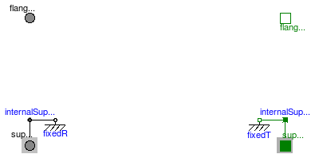
This is a 1-dim. rotational component with
This model is used to build up elementary components of a drive train transforming rotational into translational motion with equations in the text layer.
If useSupportR=true, the rotational support connector is conditionally enabled
and needs to be connected.
If useSupportR=false, the rotational support connector is conditionally disabled
and instead the rotational part is internally fixed to ground.
If useSupportT=true, the translational support connector is conditionally enabled
and needs to be connected.
If useSupportT=false, the translational support connector is conditionally disabled
and instead the translational part is internally fixed to ground.
| Type | Name | Default | Description |
|---|---|---|---|
| Boolean | useSupportR | false | = true, if rotational support flange enabled, otherwise implicitly grounded |
| Boolean | useSupportT | false | = true, if translational support flange enabled, otherwise implicitly grounded |
| Type | Name | Description |
|---|---|---|
| Flange_a | flangeR | Flange of rotational shaft |
| Flange_b | flangeT | Flange of translational rod |
| Support | supportR | Rotational support/housing of component |
| Support | supportT | Translational support/housing of component |
partial model PartialElementaryRotationalToTranslational
"Partial model to transform rotational into translational motion"
parameter Boolean useSupportR=false
"= true, if rotational support flange enabled, otherwise implicitly grounded";
parameter Boolean useSupportT=false
"= true, if translational support flange enabled, otherwise implicitly grounded";
Rotational.Interfaces.Flange_a flangeR "Flange of rotational shaft";
Modelica.Mechanics.Translational.Interfaces.Flange_b flangeT
"Flange of translational rod";
Rotational.Interfaces.Support supportR if useSupportR
"Rotational support/housing of component";
Translational.Interfaces.Support supportT if useSupportT
"Translational support/housing of component";
protected
Rotational.Interfaces.InternalSupport internalSupportR(tau = - flangeR.tau);
Translational.Interfaces.InternalSupport internalSupportT(f = -flangeT.f);
Rotational.Components.Fixed fixedR if not useSupportR;
Translational.Components.Fixed fixedT if not useSupportT;
equation
connect(internalSupportR.flange, supportR);
connect(internalSupportR.flange, fixedR.flange);
connect(fixedT.flange, internalSupportT.flange);
connect(internalSupportT.flange, supportT);
end PartialElementaryRotationalToTranslational;

Partial model of torque that accelerates the flange.
If useSupport=true, the support connector is conditionally enabled
and needs to be connected.
If useSupport=false, the support connector is conditionally disabled
and instead the component is internally fixed to ground.
| Type | Name | Default | Description |
|---|---|---|---|
| Boolean | useSupport | false | = true, if support flange enabled, otherwise implicitly grounded |
| Type | Name | Description |
|---|---|---|
| Flange_b | flange | Flange of shaft |
| Support | support | Support/housing of component |
partial model PartialTorque
"Partial model of a torque acting at the flange (accelerates the flange)"
extends Modelica.Mechanics.Rotational.Interfaces.PartialElementaryOneFlangeAndSupport2;
Modelica.SIunits.Angle phi
"Angle of flange with respect to support (= flange.phi - support.phi)";
equation
phi = flange.phi - phi_support;
end PartialTorque;
This is a partial model of a 1-dim. rotational component with one flange of a shaft in order to measure an absolute kinematic quantity in the flange and to provide the measured signal as output signal for further processing with the blocks of package Modelica.Blocks.
| Type | Name | Description |
|---|---|---|
| Flange_a | flange | Flange of shaft from which sensor information shall be measured |
partial model PartialAbsoluteSensor
"Partial model to measure a single absolute flange variable"
Flange_a flange
"Flange of shaft from which sensor information shall be measured";
equation
0 = flange.tau;
end PartialAbsoluteSensor;

This is a partial model for 1-dim. rotational components with two rigidly connected flanges in order to measure relative kinematic quantities between the two flanges or the cut-torque in the flange and to provide the measured signal as output signal for further processing with the blocks of package Modelica.Blocks.
| Type | Name | Description |
|---|---|---|
| Flange_a | flange_a | Left flange of shaft |
| Flange_b | flange_b | Right flange of shaft |
partial model PartialRelativeSensor "Partial model to measure a single relative variable between two flanges" Flange_a flange_a "Left flange of shaft"; Flange_b flange_b "Right flange of shaft"; equation 0 = flange_a.tau + flange_b.tau; end PartialRelativeSensor;
Basic model for Coulomb friction that models the stuck phase in a reliable way.
| Type | Name | Default | Description |
|---|---|---|---|
| Advanced | |||
| AngularVelocity | w_small | 1.0e10 | Relative angular velocity near to zero if jumps due to a reinit(..) of the velocity can occur (set to low value only if such impulses can occur) [rad/s] |
partial model PartialFriction
"Partial model of Coulomb friction elements"
// parameter SI.AngularVelocity w_small=1 "Relative angular velocity near to zero (see model info text)";
parameter SI.AngularVelocity w_small=1.0e10
"Relative angular velocity near to zero if jumps due to a reinit(..) of the velocity can occur (set to low value only if such impulses can occur)";
// Equations to define the following variables have to be defined in subclasses
SI.AngularVelocity w_relfric
"Relative angular velocity between frictional surfaces";
SI.AngularAcceleration a_relfric
"Relative angular acceleration between frictional surfaces";
//SI.Torque tau "Friction torque (positive, if directed in opposite direction of w_rel)";
SI.Torque tau0 "Friction torque for w=0 and forward sliding";
SI.Torque tau0_max "Maximum friction torque for w=0 and locked";
Boolean free "true, if frictional element is not active";
// Equations to define the following variables are given in this class
Real sa(final unit="1")
"Path parameter of friction characteristic tau = f(a_relfric)";
Boolean startForward(start=false, fixed=true)
"true, if w_rel=0 and start of forward sliding";
Boolean startBackward(start=false, fixed=true)
"true, if w_rel=0 and start of backward sliding";
Boolean locked(start=false) "true, if w_rel=0 and not sliding";
constant Integer Unknown=3 "Value of mode is not known";
constant Integer Free=2 "Element is not active";
constant Integer Forward=1 "w_rel > 0 (forward sliding)";
constant Integer Stuck=0
"w_rel = 0 (forward sliding, locked or backward sliding)";
constant Integer Backward=-1 "w_rel < 0 (backward sliding)";
Integer mode(
final min=Backward,
final max=Unknown,
start=Unknown, fixed=true);
protected
constant SI.AngularAcceleration unitAngularAcceleration = 1;
constant SI.Torque unitTorque = 1;
equation
/* Friction characteristic
locked is introduced to help the Modelica translator determining
the different structural configurations,
if for each configuration special code shall be generated)
*/
startForward = pre(mode) == Stuck and (sa > tau0_max/unitTorque or pre(startForward)
and sa > tau0/unitTorque) or pre(mode) == Backward and w_relfric > w_small or
initial() and (w_relfric > 0);
startBackward = pre(mode) == Stuck and (sa < -tau0_max/unitTorque or pre(
startBackward) and sa < -tau0/unitTorque) or pre(mode) == Forward and w_relfric <
-w_small or initial() and (w_relfric < 0);
locked = not free and not (pre(mode) == Forward or startForward or pre(
mode) == Backward or startBackward);
a_relfric/unitAngularAcceleration = if locked then 0 else
if free then sa else
if startForward then sa - tau0_max/unitTorque else
if startBackward then sa + tau0_max/unitTorque else
if pre(mode) == Forward then sa - tau0_max/unitTorque else
sa + tau0_max/unitTorque;
/* Friction torque has to be defined in a subclass. Example for a clutch:
tau = if locked then sa else
if free then 0 else
cgeo*fn*(if startForward then Math.tempInterpol1( w_relfric, mue_pos, 2) else
if startBackward then -Math.tempInterpol1(-w_relfric, mue_pos, 2) else
if pre(mode) == Forward then Math.tempInterpol1( w_relfric, mue_pos, 2) else
-Math.tempInterpol1(-w_relfric, mue_pos, 2));
*/
// finite state machine to determine configuration
mode = if free then Free else
(if (pre(mode) == Forward or pre(mode) == Free or startForward) and w_relfric > 0 then
Forward else
if (pre(mode) == Backward or pre(mode) == Free or startBackward) and w_relfric < 0 then
Backward else
Stuck);
end PartialFriction;